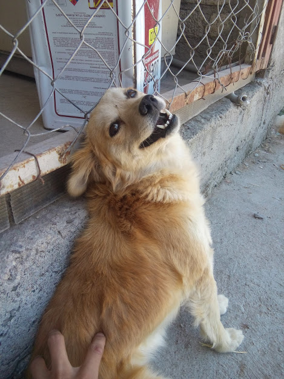
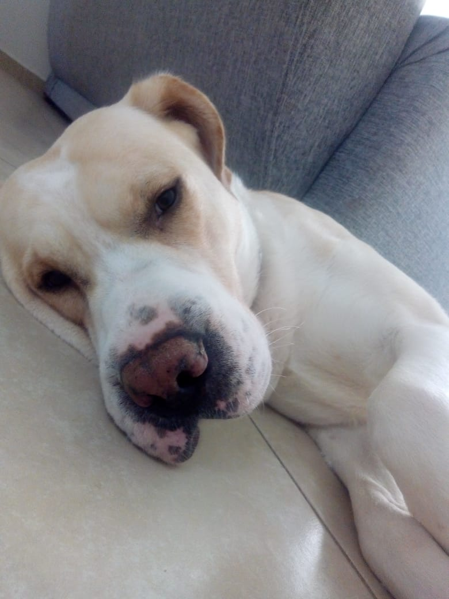
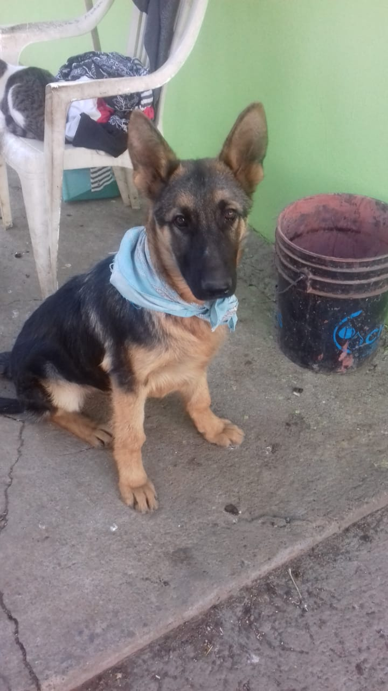

Bienvenidos a esta pagina
En esta página es para recaudar fotografias de mascotas, las cuales son para divertir, descargar y concientizar a las personas a no abandonar animalitos y a no comprar, solo adoptar
Lo más reciente y divertido
¿Te gusta Cheems?

¡Adopta una mascota!
Son nuestros mejores amigos, cuidalos :3

Canela

Marley
Pan
